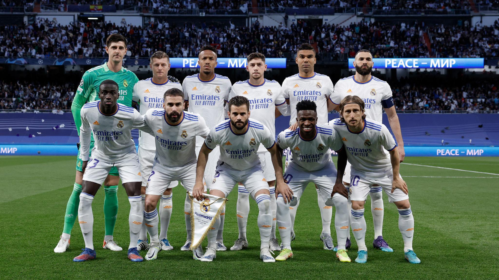

Realmadrid

O Real Madrid Club de Fútbol, comumente referido como Real Madrid, é um clube de futebol profissional espanhol sediado em Madrid. Compete na La Liga, a principal competição do sistema de ligas da Espanha. Manda seus jogos em casa no Estádio Santiago Bernabéu,[2] com capacidade para 81.044 pessoas, no centro de Madrid, desde 1947.
Fundado em 1902 como Madrid Football Club, o clube tem tradicionalmente usado uniformes brancos como mandante desde a sua criação. O título honorífico real foi concedido ao clube pelo rei Afonso XIII em 1920 juntamente com a coroa real no emblema. É uma das entidades mais premiadas e reconhecidas do mundo, recebendo no futebol o título de melhor clube do Século XX pela FIFA, em dezembro de 2000 e o primeiro entre todos clubes espanhóis,[3][4] e o título de melhor clube europeu do Século XX pela IFFHS, em maio de 2010.[5] Entre suas maiores conquistas, o clube detém de 35 títulos da La Liga (um recorde), 20 títulos da Copa del Rey, 12 títulos da Supercopa da Espanha, um título da Copa da Liga Espanhola e um título da Copa Eva Duarte. Em nível internacional, o clube venceu 14 títulos europeus da Taça dos Clubes Campeões Europeus/Liga dos Campeões da UEFA, sendo o maior campeão do torneio, dois títulos da Liga Europa da UEFA, cinco títulos da Supercopa da UEFA, dois títulos da Copa Latina, um título da Copa Ibero-Americana,[6][7][8] três títulos da Copa Intercontinental e cinco títulos da Copa do Mundo de Clubes da FIFA.[9][10] 